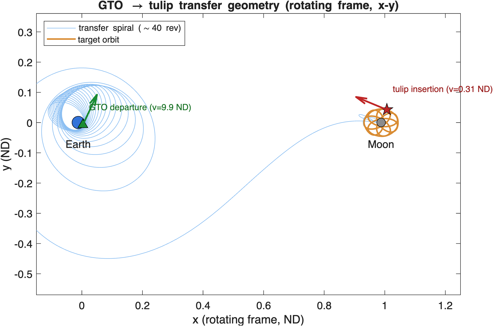
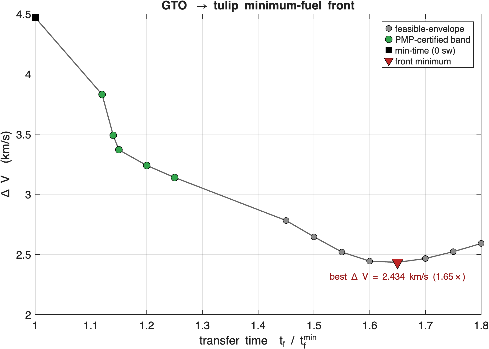
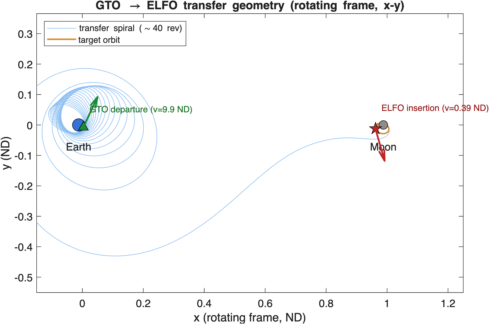
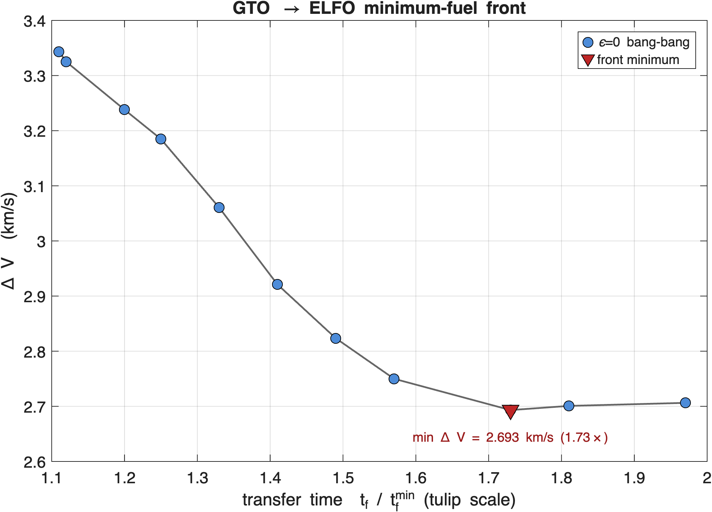

Minimum-Fuel Low-Thrust
GTO → Cislunar Transfers
Certified bang-bang trajectories to a lunar south-pole tulip orbit and an elliptical lunar frozen orbit (ELFO), in the Earth–Moon CR3BP
Coorbital · M. Casey · July 2026
A 15 kg spacecraft departs a GTO ($350\times35{,}786$ km) with a 25 mN, $I_{sp}=2100$ s electric thruster, and must rendezvous with a cislunar science orbit.
High $I_{sp}$ trades trip time for propellant — and for a rideshare the propellant mass dominates the economics. So the objective that matters is minimum fuel.
Two destinations
• Tulip — south-pole-favorable petal orbit (nav / relay geometry)
• ELFO — elliptical lunar frozen orbit, IM-style data relay
$m_0 = 15$ kg
$T_{\max} = 25$ mN
$I_{sp} = 2100$ s
$\mu^\star = 0.01215$
CR3BP, rotating frame
Of the three canonical objectives, only min-fuel is linear in the throttle $s\in[0,1]$:
$$ J_{\text{time}}=\!\int 1\,dt,\qquad J_{\text{energy}}=\!\int \tfrac12 s^2\,dt,\qquad J_{\text{fuel}}=\!\int s\,dt $$Minimizing a linear cost pushes the optimum onto a bound — the throttle is genuinely bang-bang: burn near perigee, coast near apogee, with dozens of switches.
Objective-side: bang-bang non-smoothness kills the shooting basin and smears low-order collocation. • Dynamics-side: a $\sim$40-revolution spiral; each perigee pass contributes $\sim\!10^6$ sensitivity and enormous gravity curvature.
min-time root → min-energy seeds over a $t_f$ band → energy→fuel homotopy per $t_f$
Both walls are handled: the homotopy removes the bang-bang wall by starting from the convex problem; a Sundman time-reparameterization removes the perigee-curvature wall.
Sundman clock — change the independent variable,
$$ \frac{dt}{d\tau}=\kappa(\mathbf r),\quad \kappa=r_1^{\,p},\ p=1.5 $$Lowers every gravitational singular exponent by $p$ and auto-concentrates mesh nodes at perigee. A two-primary clock $\kappa=(r_1^{-q}+(r_2/D)^{-q})^{-p/q}$ tames the lunar perigee too — required, or the exact Hessian overflows near the Moon.
Bertrand–Épénoy homotopy — deform the cost,
$$ J(\varepsilon)=\!\int s\,dt-\varepsilon\!\int s(1-s)\,dt $$$\varepsilon:1\!\to\!0$ walks from energy (smooth) to fuel (bang-bang). The saturated-node fraction climbs $28\%\!\to\!75\%\!\to\!94\%\!\to\!99.6\%$ as the coasts open up.
Deform from the convex relaxation toward the non-smooth optimum.

The $\sim$40-rev spiral (blue) departs GTO at the Earth (green, initial velocity arrow) and winds out to the Moon, inserting onto the tulip orbit (orange) at the campaign phase (red, insertion velocity arrow).
Insertion (campaign phase)
119 km on-orbit · 28,300 km from Moon · ND speed 0.31 — a gentle low-thrust capture state
25 switches · 99.4% bang-bang
defect $2.4\times10^{-14}$ · rendezvous error 0
propellant 2.264 kg · $\Delta V$ 3.370 km/s
Burn near perigee, coast near apogee — the many-switch structure is 23% leaner than the best 3-switch burn-then-coast, confirming it is the genuine optimum, not an artifact.

Sweeping the transfer time $t_f$ maps the propellant–trip-time trade. The lower envelope is the deliverable.
$\Delta V = 2.434$ km/s at $1.65\times$ ($\sim$46 d)
— about 45% below the min-time cost (4.47 km/s)
Green points are PMP first-order certified ($1.12$–$1.25\times$); grey are feasible-envelope bounds.

The same pipeline retargets to the ELFO
(im_elfo_optimum: $a=12{,}000$ km, $e=0.69$,
$i=56.5^\circ$). The seed is manufactured by a gravity-homotopy
ladder that turns lunar gravity off, retargets, then turns it back on.
Insertion (nearest phase)
16,800 km from Moon · ND speed 0.39 — chosen to keep the target-continuation well-conditioned
$\varepsilon=0$ machine-tight
edge $\sim$99.6% · 48 days
$\Delta V$ 2.693 km/s · 12.3% propellant
This is the lowest-ΔV ELFO transfer — it sits right at the fold of the front, where the many-switch bang-bang is hardest to resolve.

A cleaner, near-monotone front — ELFO is an easier capture than the tulip.
$\Delta V = 2.693$ km/s at $1.73\times$ (48 d),
then flat past the fold.
11 of 14 grid factors reach $\varepsilon=0$ machine-tight; the 3 gaps are the low-ΔV plateau where bang-bang is hardest.
| Target | Min-time $t_f$ | Best-$\Delta V$ $t_f$ | Best $\Delta V$ | Propellant |
|---|---|---|---|---|
| Tulip (campaign) | 5.83 ND / 25.8 d | $1.65\times$ / ~46 d | 2.434 km/s | — |
| ELFO (nearest) | 6.10 ND / 27.0 d | $1.73\times$ / 48 d | 2.693 km/s | 12.3% |
A machine-tight KKT point of the discrete NLP, PMP-consistent by the scale-invariant primer ($0.06^\circ$–$0.19^\circ$) and transversality indicators and an independent adjoint-ODE verifier, corroborated by mesh-invariance and $\Delta V$ cross-checks.
Full method write-up: doc/minfuel_method_note.pdf.
All solvers, seed generators, and verifiers under
GTO_tulip/.